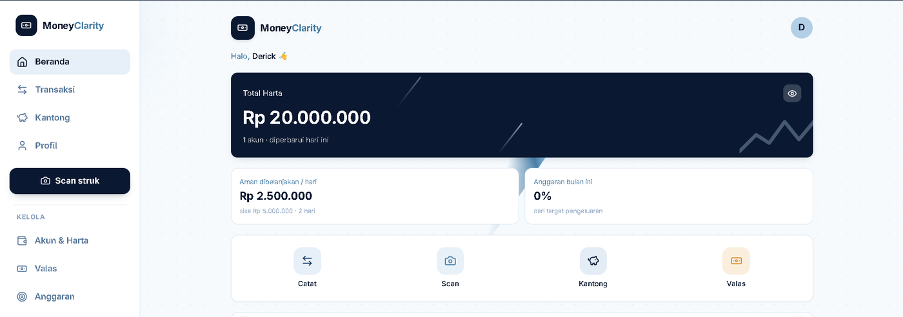
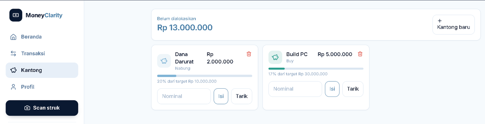

Money Clarity Planner
Aplikasi PWA pencatat keuangan pribadi dalam Rupiah. Dibuat karena mencatat pengeluaran dari struk itu melelahkan — jadi struknya yang dibaca aplikasi, bukan diketik ulang.
- Transaksi, akun, kategori, kantong anggaran (envelope budgeting), target bulanan, sampai pencatatan investasi dan mata uang asing.
- Fitur scan struk: gambar diproses OCR lalu dibaca AI vision, hasilnya langsung jadi transaksi siap simpan.
- Arsitektur berlapis —
domain → data → antarmuka. Logika uang dipisah dari React dan Supabase supaya bisa diuji sendiri lewat unit test. - Skema PostgreSQL dengan Row Level Security, jadi data tiap pengguna terkunci di tingkat basis data, bukan cuma di kode.
React 19TypeScriptVite
Tailwind CSSSupabasePostgreSQLVitest
Angka pada tangkapan layar adalah data uji. Repositori masih privat — kodenya bisa saya tunjukkan langsung saat wawancara.


- Peran
- Merancang dan menulis seluruh aplikasi sendiri, dari skema basis data sampai antarmuka.
- Keputusan
- Logika uang disimpan sebagai bilangan bulat Rupiah dan diuji terpisah, supaya tidak ada selisih pembulatan.